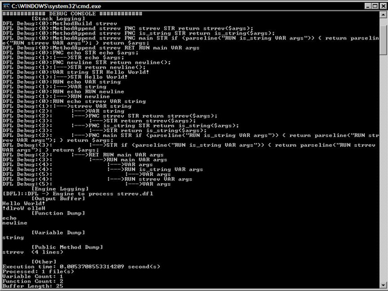
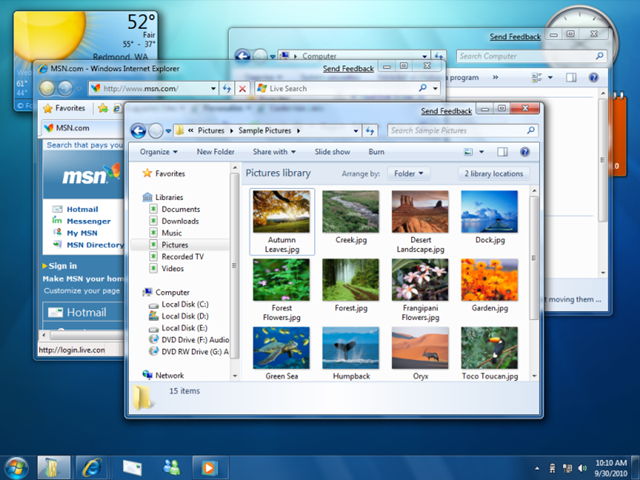
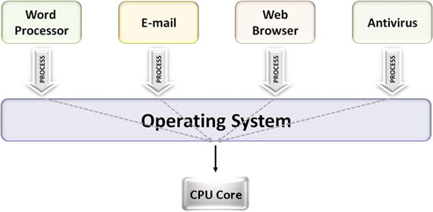
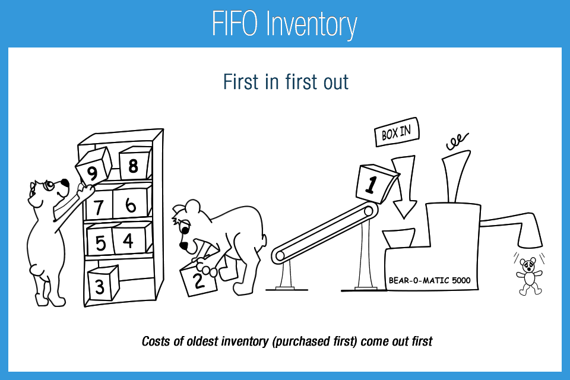
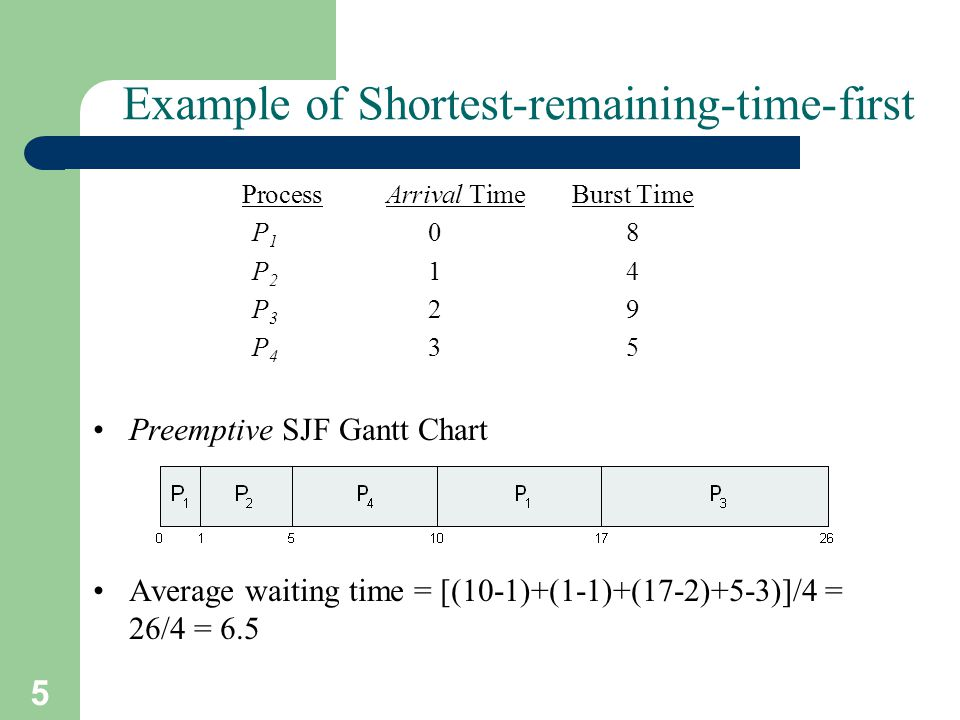
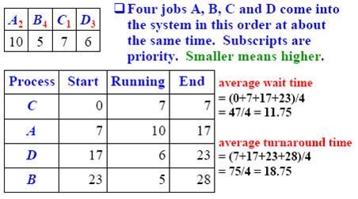
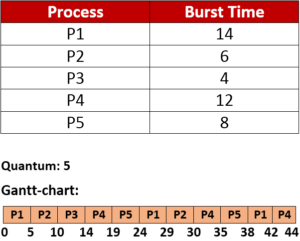
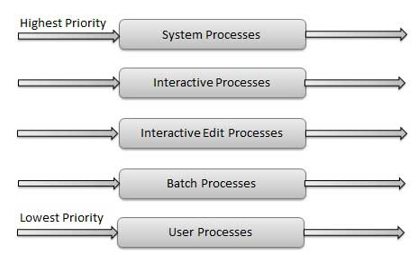

by Enidu Batuwanthudawe C i v i l E n g . | B . S c . i n I T
. . . . . . . . . . . . . . . . . . . .. . . . . . . . . . . . . . . . . . . .
මෙහෙයුම් පද්ධතියක් යනු
පරිශීලකයා හා පරිගණකයේ දෘඩාංග අතර
සන්නිවේදනය සිදු කරන
අතුරුමුහුණත වේ (interface).
පරිගණකයට තේරුම් ගත හැක්කේ යන්ත්ර භාෂාව (machine language) පමණකි.
විධාන පේලි අතුරුමුහුණත (Command Line Interface/ CLI) යතුරු පුවරුව භාවිතයෙන් විධාන ලබා දෙයි.

චිත්රක පරිශීලක අතුරුමුහුණත (Graphical User Interface/ GUI) තිරයේ දිස්වන චිත්රක හරහා ගොස් අවශ්ය කාර්යය ඉටු කරගත හැකියි.

පරිගණක මෙහෙයුම් පද්ධතියකින් ඉටු කරන ප්රධාන
කාර්යයන් 2 නම් කරන්න?
එකම සම්පතට අයැදුම් (request) එකකට වඩා පැමිණි විට කාර්යක්ෂමතාව හා සාධාරණ භාවිතය පිලිබඳ සලකා බලා එය වෙන් කර දෙයි.
දෝෂ වැලැක්වීම සඳහා හා පරිගණකය අවිධිමත් භාවිතයෙන් වලක්වා ගැනීම සඳහා ක්රමලේඛවල ක්රියාකාරීත්වය පාලනය කිරීම.
දෘඩාංග පාලනය හා මෘදුකාංග කළමනාකරණයේ ප්රධාන කොටස් (6) විස්තර කරන්න
පරිගණකයේ ස්විචය ක්රියාත්මක කල විගස
හෝරා යන්ත්රය (system clock) ක්රියාත්මක වී එයින් නිපදවෙන හෝරා ස්පන්ද (clock pulses) මඟින් මධ්ය සැකසුම් ඒකකය (CPU) ක්රියාරම්භ (initialize) වේ.
මධ්ය සැකසුම් ඒකකය ක්රියාරම්භ වීමේ එක් කොටසක් වනුයේ මූලික ආදාන/ ප්රතිදාන පද්ධතියේ (BIOS) ඇති ඇරඹුම් ක්රමලේඛයේ (startup program) පළමුවන උපදෙස (instruction) සොයා ගැනීමයි.
මෙය Power-On Self Test (POST) වැඩසටහන ධාවනය කිරීම සඳහා උපදෙසයි. මූලික ආදාන/ ප්රතිදාන පද්ධතිය මඟින් මෙම උපදෙස සසම්භාවී ප්රවේශ මතකයට (RAM) ප්රවේශනය කරගනී (load).
ඉන්පසු සන්නායක
(CMOS – Complementary Metal Oxide Semiconductor) මතකය පරීක්ෂා කිරීම මඟින් POST වැඩසටහන ආරම්භ වේ. සන්නායක බැටරිය ඇනහිට නොමැති නම් POST වැඩසටහන දිගටම ක්රියාත්මක වේ.
POST මඟින් පරිගණකයට සවි කර ඇති සියළුම දෘඩාංග පරීක්ෂා කර බලා ඒවා නියමිත පරිදි ක්රියාත්මක වන බවට තහවුරු කරගනී.
ඊට පසු BIOS මඟින් පරිගණකයේ පාලනය ස්වාරම්භක වැඩසටහනට (bootstrap program/ bootstrap loader) ලබාදෙනවා.
මෙම වැඩසටහන මඟින් කලින් POST වැඩසටහනෙන් හඳුනා ගත් ආචයන උපක්රම (storage devices) එකින් එක ඇරඹුම් පටිපාටියේ (boot sequence) පිලිවෙලට සොයා බලනවා. ඒ Master Boot Record (MBR) එක සඳහායි.
මේ විදියට හමුවන MBR එකක් සහිත පලමුවන ආචයන උපක්රමය ඇරඹුම් ධාවකය වේ (boot drive). එහි ඇති MBR එක සසම්භාවී ප්රවේශ මතකයට (RAM) ප්රවේශනය කරගනී. එහි මෙහෙයුම් පද්ධතියේ මදය ආචිත ස්ථානය (stored location) සඳහන් වේ.
මෙම ස්ථානයෙන් මදය සසම්භාවී ප්රවේශ මතකයට ප්රවේශනය කරගෙන ක්රියාකරවීම (execute) සිදු කරනු ලබයි. පරිගණකය ධාවනය වෙනවා යනුවෙන් හඳුන්වන්නේ මේ අවස්ථාවේදියි.
මින්පසු මෙහෙයුම් පද්ධතිය විසින් නැවතත් දෘඩාංග සෙවුමක් (hardware search) ක්රියාත්මක කරයි. මෙම සෙවුම මඟින් මතකය හා එහි වැඩෙහි යෙදිය හැකි ප්රමාණය නිර්ණය කරනවා. ඒ වගේම මවු පුවරුවට (mother board) සම්බන්ධව ඇති සියළුම පර්යන්ත උපක්රම (peripheral devices) පාලනය සඳහා අවශ්ය උපක්රම ධාවක ප්රවේශනය කරගනී.
අවසානයේ මෙහෙයුම් පද්ධතිය මුලින් ක්රියාත්මක කල යුතු විධානයන් ක්රියාත්මක කර චිත්රක පරිශීලක අතුරුමුහුණත (GUI) තිරයේ දිස් කොට පරිශීලකයාගේ විධානයක් බලාපොරොත්තුවෙන් සිටියි.
කලින් සඳහන් කල (BIOS) වැඩසටහන පිහිටා ඇත්තේ පඨන මාත්ර මතකයෙහියි (ROM). එයට පඨන මාත්ර මතකයක් යොදා ගැනීම සඳහා හේතු දක්වන්න ?
- 1 - එය ස්ථීර මතකයක් වීම (සසම්භාවී ප්රවේශ මතකය තාවකාලිකයි)
- 2 - එය ක්රියාරම්භ කිරීමට අවශ්ය නොවීම
- 3 - වෛරසයන්ට පහසුවෙන් එයට ලඟා වීමට හැකි නොවීම දැක්විය හැකියි.
බහුලව භාවිතා වන ස්වාරම්භක වැඩසටහන් දෙකක් නම් කරන්න.?
- 1 - GNU grand unified boot loader (GRUB): ලිනක්ස් පාදක OS සඳහා විවෘත කේත (open source) ස්වාරම්භක වැඩසටහනක්.
- 2 - NT loader (NTLDR): Windows NT සිට Windows XP දක්වා වූ ස්වාරම්භක වැඩසටහන.
මෙහෙයුම් පද්ධති වර්ගීකරණය ආකාරයන් ලියා විස්තර කරන්න

- 1 - දීර්ඝ කාලීන පෙළගැ ස්වීම්
- 2 - මධ්ය කාලීන හෝ මධ්ය කාලීන පෙළගැ ස්වීම්
- 3 - කෙටි කාලීන පෙළගැ ස්වීම්




